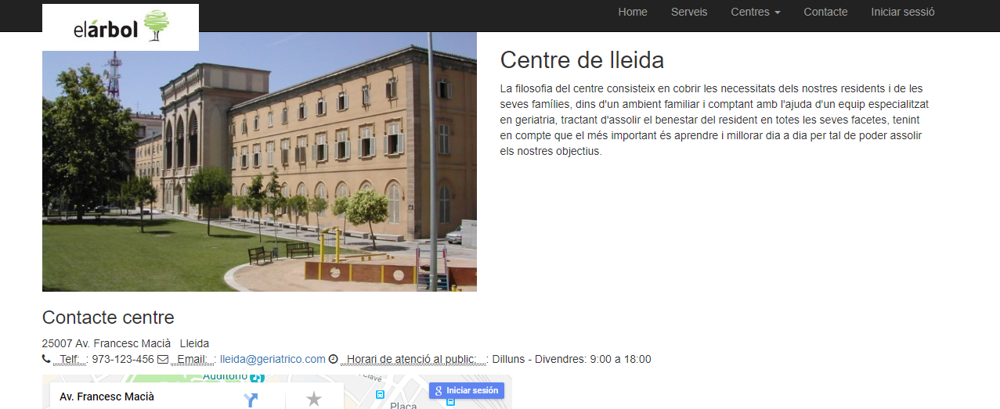
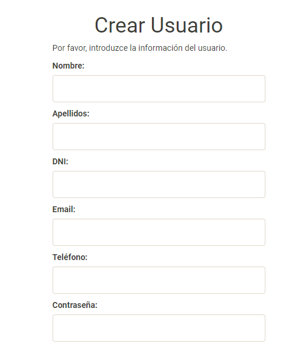

Part publica¶
En aquet apartat trobarem tot lo relacionat amb la part visible dels centres, una zona mes generica i una altra zona mes particular de cada centre.
home¶
En el apartat home trobarem la part mes general de cada centre.
Serveis¶
Aquest apartat es una zona comu per a tots els centres es a dir tots els serveis que surten seran per a tots comu.

Centres¶
Es una part mes concreta on es mostra tot lo relacionat amb cada centre de forma especifica.
Centres de catalunya:

LLeida
- Descripcio: La filosofia del centre consisteix en cobrir les necessitats dels nostres residents i de les seves famílies, dins d’un ambient familiar i comptant amb l’ajuda d’un equip especialitzat en geriatria, tractant d’assolir el benestar del resident en totes les seves facetes, tenint en compte que el més important és aprendre i millorar dia a dia per tal de poder assolir els nostres objectius.
- Contcte del centre: 25007 Av. Francesc Macià Lleida Telf: : 973-123-456 Email: : lleida@geriatrico.com Horari de atenció al public: : Dilluns - Divendres: 9:00 a 18:00
- Serveis extres: Serveis extres que es donen en aquet centre habitualment.
- Barcelona
- Descripcio: Residència geriàtrica som una empresa familiar , fundada el 2002, any en el qual vam obrir el nostre primer centre al carrer València 176, al centre de Barcelona. Gairebé 10 anys ens avalen, Lliurats i dedicats plenament a donar confort i benestar a la gent gran , i volem seguir millorant i ampliant els nostres serveis, any rere any, amb la meta de seguir oferint tot allò que els nostres avis necessiten, enmig de la natura, a 30 minuts de Barcelona en cotxe, però en un entorn totalment natural , silenciós , únic i exclusiu.
- Contcte del centre: 08001 Carrer del Portal de Santa Madrona Barcelona Telf: : 93-123-456 Email: : barcelona@geriatrico.com Horari de atenció al public: : Dilluns - Divendres: 9:00 a 18:00
- Serveis extres: Serveis extres que es donen en aquet centre habitualment.
Tarragona
- Descripcio: La decisió d’ingressar a un familiar en una residència és sempre un punt delicat i que involucra emocions, dubtes i temors. Conscients d’això, a la Residència de tarragona estem molt sensibilitzats sobre l’aspecte particular i procurem des del primer instant, establim un vincle d’afectivitat tant amb l’antic com amb els seus familiars.
- Contcte del centre: 43860 La Atmetlla de mar Tarragona Telf: : 977-123-456 Email: : tarragona@geriatrico.com Horari de atenció al public: : Dilluns - Divendres: 9:00 a 18:00
- Serveis extres: Serveis extres que es donen en aquet centre habitualment.
- La-Seu
- Descripcio: La Residència La seu és un centre fundat l’any 2006, amb l’objectiu principal del BENESTAR I CONFORT dels seus residents, en un entorn de llibertat i natura lligat a un ambient familiar i comptant amb la col·laboració de professionals especialitzats. Edifici de dues plantes, situat a La seu en un entorn natural, que disposa de 11 habitacions individuals o dobles compartides amb TV, timbres d’alarma, calefacció, aire condicionat a les zones comuns;...
- Contcte del centre: 25700 Passeig de Joan Brudieu Seu D’Urgell (la), Lleida Telf: : 973-123-123 Email: : la seu@geriatrico.com Horari de atenció al public: : Dilluns - Divendres: 11:00 a 18:00
- Serveis extres: Serveis extres que es donen en aquet centre habitualment.
- Girona
- Descripcio: Situada a les afores de la població de girona, la residència de majorsgirones ha estat dissenyada fins a l’últim detall per facilitar la vida quotidiana als residents, amb amplis jardins i espais lluminosos, mobiliari ergonòmic i unes cuidades instal·lacions, en les amb possibilitats a les persones grans i les seves famílies una atenció de la màxima qualitat.
- Contcte del centre: 17230 Av. Onze de Setembre Palamós, Girona Telf: : 97-123-456 Email: : girona@geriatrico.com Horari de atenció al public: : Dilluns - Divendres: 10:00 a 17:00
- Serveis extres: Serveis extres que es donen en aquet centre habitualment.
contacte¶
Contacte Fundació 34 Rambla ferran lleida, Cp 25001 P: 973-123-456 E: name@example.com H: Dilluns - Divendres: 9:00 a 18:00
Inicia sessió¶
Dintre del apartat Inicia sessió hi ha dos posibilitats:
- Ingresar amb usuari i login.
- Registrar i crear usuari (el administrador te te que asignar a un grup difinitiu).
